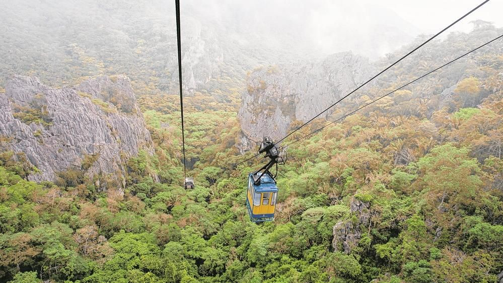

Um dos melhores passeios para se fazer em Bonito, a gruta do
lago azul esconde belezas que surpreendem e encantam todos que a
visitam. A maior atração da Gruta é o lago que dá nome ao lugar.
Localizado no interior da gruta, o lago chama atenção pelo tom
azul intenso e belíssimo de suas águas.
O Aquário Natural é um dos lugares mais lindos e visitados de
Bonito. O local possui esse nome por conter uma gigantesca
diversidade de peixes de todos os tamanhos e cores. O aquário
natural é aberto à visitação e as pessoas podem fazer flutuação
e nadar juntinhos com os peixes!

Ubajara, CE - Cid Barbosa
Promoção pra Ubajara - CE
Localizado no interior do Ceará, Ubajara é um destino único no
Nordeste. Seu nome de origem indígena, significa “Senhor da
Canoa” e faz referência a uma gruta de mesmo nome cheia de
encantos na cidade. Além de muitas histórias e cultura, o
município também possui uma natureza rara que proporciona ótimos
passeios.
O município cearense de Ubajara é conhecido por combinar de
forma única as belezas da serra e do sertão. Enquanto parte da
região é de paisagens da Caatinga, outros cantinhos são de uma
floresta tropical única.
Blog
Fortaleza, CE, Brasil - Maick Maciel
Pacotes de viagem pra viajar barato
Lugares pra viajar de avião e aproveitar o próximo feriadão como
você gosta: curtindo numa festa, na tranquilidade, na natureza ou
de casalzinho.
Arraial do Cabo, RJ, Brasil - Jonathan Borba
Lugares pra viajar no Brasil
Paraísos inexplorados, gastronomia de rua, cultura local, e
experiências únicas.